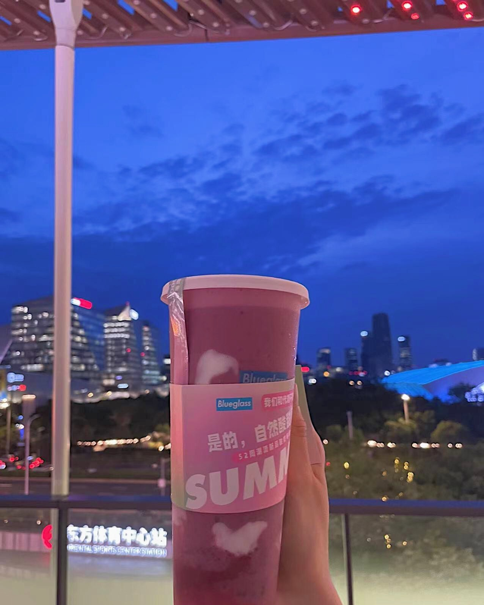
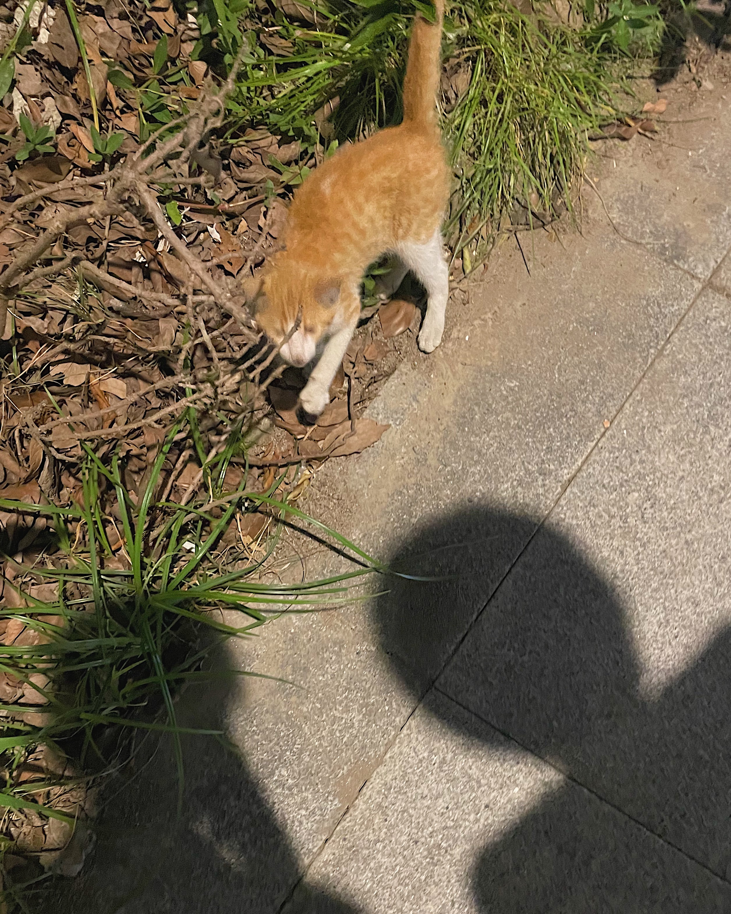

22-06-24
对于怕热的人来说，燥热的下午似乎并不适合谈恋爱，也许这就是她见面没有抱抱我的原因。我一眼就注意到了她新剪的短发，不得不说短头发很能显出她的清纯来。她穿了一件有领子的白色T恤，扣了两粒扣子，看起来很像我们学校的校庆文化衫，给人一种很乖巧的感觉。虽然一见面她就和我抱怨天气好热什么时候下雨，但是她看起来心情很是不错，可能是由于见到了我，也可能是由于刚写完了期末论文。
遗憾的是我没有闻到她扑面而来的头发香，也许是夏天已经把我热晕了。不过据她所说我今天的味道格外好闻，是一种“西柚加洗手液混合着鱼腥”的味道。鱼腥是我的汗臭味，洗手液是我的沐浴露香，那么西柚可能是我独特的性荷尔蒙在作祟吧？以前的日子里很少有人和我说我身上有一股独特的味道，这个味道只有她能够闻到也说不定，毕竟大家都说相爱才会闻到体香。
6号线地铁的轰鸣让人很不愉悦，我听不见她说的话，她也听不见我的回答。有的时候我俩只能透过对面的玻璃，干瞪着映在上面的自己。她笑我是肩溜子，我很羡慕她挺直的后背，保持体态真是一件痛苦的事情。看得出她一直在努力找话题，但是在她面前我常常说不出什么话来，怕自己说错什么话，怕自己上头之后过度表达。她每次想要引出一个新话题或者想要把话题转向我时，使用的语气都非常可爱，是一种具有日剧女主特征的那种语气。虽然她带着口罩，但我觉得表情肯定也是一模一样的，既可爱又努力的样子惹人怜爱。
牛腹肉三明治真的很香，东南亚菜用的香料让人惊喜，看来堆砌油盐也是需要技巧的。给她拍了几张好看的照片，我喜欢那张以深蓝色天空为背景的。她的笑容看起来很清澈自然，我多希望我们留下回忆的照片里她永远是在笑的。在通往前滩的路上有一只小猫前来碰瓷，想用它的惯用伎俩来吸引人类的注意，很不幸我又上钩了。
在江边吹风的时候我们又在闹别扭，当我听见她说话带有哭腔的时候我才意识到事情并不好，好在我及时认错让感情重回正轨。我向她坦露了一些心里话，没想到有的时候她也会有和我一样的烦恼，不过向她说出这些真的很让人开心！似乎只要和她说出来，一切都会变得很顺利。虽然对于未来的打算让我非常焦虑，但是能够感到我们俩的关系又靠近了一点点，真希望我们毕业之后也能一直在一起🥺
/*一些小事：她吐槽我的长袜子和长腿毛，我想可能是看它不爽很久了；她好像对猪油有什么误解；和她接吻会让她走不动路，好搞笑；不知道为什么她上厕所时间变快了*/
牛腹三明治，巨好吃
这个地方风景真好，下次还坐这里
小猫进行茶艺展示
评论区